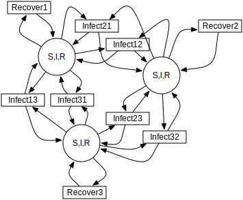
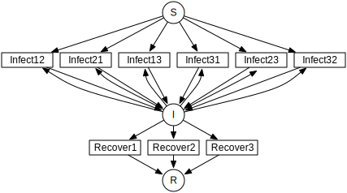
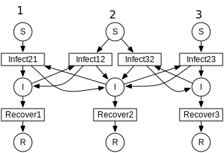

In the preface to his classic book on semi-Markov processes [Howard:1971], Howard offers the following guidance to readers:
It is often said that good ideas are simple; the Markov process is no exception. In fact there is no problem in this book that cannot be made clear to a child. The device we use to make such expositions simple is a pond covered by lily pads among which a frog may jump. Although his jumps may be random, the frog never falls into the water...it should be helpful to all readers to discuss each chapter using the lily pond analogy.
While one may question Howard’s view of the abstract reasoning capabilities of children, his advice about frogs and lily pads is sound. The Two-state Brownion model described by Weiss is that of a frog on lily pads, where the frog may be sleeping or awake.
Imagine a pond with a frog jumping among seven lily pads as in Figure Figure 3. Location of lily pads in a hypothetical pond.. The probability of jumping to pad \(i\) at or before time \(t=\tau\) given that the frog arrived at pad \(j\) at \(t=0\) is given by
where \(q_{ij}\) is marginal probability of jumping from pad \(j\) to pad \(i\) at any time and \(H_{ij}(\tau)\) is the conditional distribution of jump times given that the frog arrived at pad \(j\) at t=0 and the destination will be pad \(j\). It is convenient to assume that the frog will actually move at every jump, i.e.,
and \(q_{jj} = 0\).
Figure 3. Location of lily pads in a hypothetical pond.
Implementation of the Weiss two state Brownion example is in a separate PDF.
Let’s take a paradigmatic system, a set of \(N\) individuals whose disease states can be susceptible, infected, or recovered (SIR). Each individual can infect those other individuals with whom they have contact, as defined by a contact graph with \(M\le N(N-1)\) directed edges. The hazard rate for infecting a neighboring individual, where a neighbor is a neighbor in the contact graph, is \(\beta_i(t-t_e)\), where \(i\) is the individual and \(t_e\) is the moment the moment the first individual became infected. The hazard rate for recovery of an individual is \(\gamma_i(t-t_e)\), where \(t_e\) is the moment the individual first becomes infected. This model doesn’t include varying susceptibilities for infection.
We will walk through the decision-making process for construction of a GSPN to simulate a trajectory of this system for different conditions. We can think of the complexity in three steps.
- Identical individuals, exponentially-distributed transitions
- Unique individuals, exponentially-distributed transitions
- Unique individuals, arbitrarily-distributed transitions
The first step is to identify the states and transitions possible in the model. The marking of the GSPN can represent the same system state multiple ways, among which we choose according to requirements for calculating transitions. Some possible representations of the state:
- Each individual’s state is \(p_i\) where \(p_i\in(S,I,R)\).
- A list of individuals in each state, \((n_S, n_I, n_R)\).
- A presence-absence count for each individual in each state, \(p_{iS}\in(0,1)\), \(p_{iI}\in(0,1)\), \(p_{iR}\in(0,1)\).
Each of these corresponds to a different data structure used to store the model’s marking.
\(N\) tokens, each with the the value \((S,I,R)\), where each token sits, for all time, at a place for each individual. A token would hold \((1,0,0)\), or \((0,1,0)\), or \((0,0,1)\).
Three places, one for each of \((n_S, n_I, n_R)\), which contain a list of individuals in the state associated with that place. Each token at place \(S\) would contain the ID of an individual. Moving tokens then changes the individual’s disease state.
A token with no internal state. There are \(3N\) places, one for each combination of individual and disease state, \((i, SIR)\). The image below shows infections between individuals 1 and 2 and between 2 and 3, but not between 1 and 3.

If we enumerate every possible transition in this system, for every possible initial marking, there are \(M\) infection transitions and \(N\) recovery transitions. Any particular infection transition needs to answer two questions, what is its distribution if it’s enabled, and what does it do when it fires? The pseudocode for a transition class has these two methods:
Enabled(UserState s, LocalMarking lm, double te, double t0)->(bool, distribution)
{
// examine local marking.
return (is_enabled, distribution_object);
}
Fire(UserState s, LocalMarking lm, double t0, RandGen rng)->void
{
// change the local marking.
}
To determine enabling, it needs to know the state of two individuals whose indices are \((k,l)\) and the time at which the first individual, \(k\), became infected, \(t_{ke}\). The state of the individuals must be part of the local marking, which is the value of the marking at the places which are ordered inputs and outputs to the transition within the GSPN. The framework will store automatically the first time step at which the transition becomes enabled and return it as \(t_e\). The framework may ask multiple times whether a transition is still enabled, each time setting \(t0\) to the current system time. A transition which is still enabled may or may not return the same distribution each time it is asked. It could look at the new marking and return something different.
For this infection transition, if \(k\) is infected and \(l\) is susceptible, then the cumulative distribution for this transition is
We might specify this distribution as a Gamma or Weibull distribution. A distribution object has methods to return hazard rate, survival, or cumulative distribution. It isn’t one or the other.
The three different ways to store the marking, listed above, therefore don’t inherently change the number of transitions in the system. What they change is the form of the calculation of enabling and of firing. Case 1 requires examination of the token to see its state. Case 2 requires finding the correct individual’s token within a list of tokens at the place. Case 3 requires just finding whether there is, or is not, a token at the place. We tend to use Case 3 because the whole system can be specified purely by stochiometry of the transition, which is a count of how many tokens are needed at a transition’s inputs and outputs and how many are moved during firing.
We are accustomed to seeing a diagram for SIR with exponentially-distributed transitions so that there are just three places, each of which holds a count of S, I, and R. This is a kind of grouped transition.
The recovery transition in this classic diagram represents a recovery by any one of the infecteds. The distribution of the recovery transition is the distribution of firing times for the first of those recovery transitions that would fire. In other words, it is the minimum of the stochastic variables for the recovery transition of each individual. If we look back at the theory section, we see that, given a set \(k\) of recovery transitions, the pdf of their minimum firing time is the derivative of the product of their survival distributions,
\[f(t)=\frac{d}{dt}\prod_k G_k(t, t_{ek}).\]
Each of those survivals, \(G_k(t,t_{ek})\), has its own enabling time. This \(f(t)\) has the same form as what we have called the waiting time \(w_i(t)\) in previous discussions. When our grouped transition fires, it has to select one of the infected individuals to recover, and this is done according to the time-dependent stochastic probability,
\[\pi_{k}(t)=\lambda_k(t,t_{ek})\prod_k G_k(t, t_{ek})/f(t)\]
When the grouped transition fires, it has to look at the time at which it fires, calculate \(\pi_{k}(t)\) for each sub-transition to create a probability mass function, and choose among them in order to decide which individual’s state it should change from I to R. Calculation of the waiting time and time-dependent stochastic probability can be done in closed form only for some very particular situations, most commonly that the transition distributions are all exponential. In that case, the cumulative waiting time is
\[W(t)=1-e^{-\sum_k \gamma_k t}\]
where \(\gamma_k\) is the constant parameter of the exponential distribution, and the stochastic probability is time-independent
\[\pi_i(t)=\frac{\gamma_i}{\sum_k \gamma_k}.\]
Further, if we choose not to track individuals uniquely through the whole of the simulation, then we can skip selection of the correct individual to recover and store susceptibles and infecteds just as a total count.
The exponential distribution isn’t the only one that can be grouped, however. The main problem with simulation of non-exponential models for SIR is that the representation grows as \(M=N(N-1)\). If we model each susceptible as having the same susceptibility to infection, then we can create a single infection transition for all of the susceptibles infected by any infected.
\[w(t)=nG_k(t,t_{ek})^{n-1}\frac{d}{dt}G_k(t,t_{ek})\]
This waiting time corresponds to multiplying the hazard rate by the current number of susceptibles. The stochastic probability mass function for which susceptible is chosen will always be uniform for this limited case.
We haven’t exhausted all of the ways one could choose to model an SIR system. For instance, if we had exponentially-distributed transitions and metapopulations, we could have a token containing a count of S, I, and R, and put one of those tokens at each place, where places correspond to particular metapopulations for which the infection and recovery rates are different. Then we can add metapopulation-to-metapopulation movement or infection rates.
Let’s choose Case 3, which has a separate place for each pair of individual and disease state. This is implemented as an example called sir_mixed.cpp.
The code will progress in two stages. First define the types, then create instances. First things first, let’s make a random number generator for the system:
using RandGen=std::mt19937;
The token doesn’t need any internal information because the state is carried by the place:
struct IndividualToken {
IndividualToken()=default;
};
We have to come up with unique keys for the places and transitions. We could make them compact some way, but let’s be correct before we get fancy:
struct SIRPlace {
int64_t disease;
int64_t individual;
SIRPlace()=default;
SIRPlace(int64_t d, int64_t i) : disease(d), individual(i) {}
// Create <, ==, and << operators. See code.
};
struct SIRTKey
{
int64_t ind1;
int64_t ind2;
int64_t kind;
SIRTKey()=default;
SIRTKey(int64_t c1, int64_t c2, int64_t k) : ind1(c1), ind2(c2), kind(k) {}
// Again create <, ==, and << operators.
}
The data types are overkill, but that’s fine. We established that the marking could be just a count of 0 or 1 tokens, but the library only has one way to store markings, as a list of tokens. That is sufficiently general. It’s called an uncolored list because we won’t select tokens by their ID. At this point, we need to define only the local marking, which is the part the transitions will see:
using Local=LocalMarking<Uncolored<IndividualToken>>;
We also have the option of adding our own parameters to the overall state of the system for convenience. Keep in mind that, if some transition modifies these parameters and another one reads them, the only way to ensure the system remains consistent is to recalculate every transition distribution afterwards. For this case, we’ll put our \(\beta\) and \(\gamma\) in here.:
struct WithParams {
// Put our parameters here.
std::map<int,double> params;
};
We are going to be using a class called ExplicitTransition which is a representation of a GSPN. It’s time to create our transition classes. The base class for transitions needs to know how the marking is stored, the random number generator, and any additions we’ve made to the state:
using SIRTransition=ExplicitTransition<Local,RandGen,WithParams>;
We might as well also make a shorthand for the distribution classes we’ll use. These are templated only because they involve the random number generator.:
using Dist=TransitionDistribution<RandGen>;
using ExpDist=ExponentialDistribution<RandGen>;
Now it’s time to make a transition. We saw pseudocode above. We expect the Enable method to examine the local marking, whose inputs are an ordered list of tokens containers at places, and return a distribution. The firing function should move those tokens.:
class InfectNeighbor : public SIRTransition
{
virtual std::pair<bool, std::unique_ptr<Dist>>
Enabled(const UserState& s, const Local& lm,
double te, double t0) const override {
if (lm.template InputTokensSufficient<0>()) {
return {true, std::unique_ptr<ExpDist>(new ExpDist(s.params.at(0), te))};
} else {
return {false, std::unique_ptr<Dist>(nullptr)};
}
}
virtual void Fire(UserState& s, Local& lm, double t0,
RandGen& rng) const override {
BOOST_LOG_TRIVIAL(trace) << "Fire infection " << lm;
lm.template TransferByStochiometricCoefficient<0>(rng);
}
};
The notation for lm.template InputTokensSufficient<0>() is a rarely-seen but perfectly normal (for C++) way to call the templated method InputTokensSufficient on the LocalMarking object. The template paramter, that <0>, says that this is the first, and only for this simulation, type of token. Had we defined our local marking with:
using Local=LocalMarking<Uncolored<IndividualToken>,Uncolored<OtherToken>>;
then there would be a token type <1>. This transition assumes that the GSPN will be hooked together in such a way that there are two inputs, one from an S place, one from an I, with stoichiometric coefficients of -1 on each, so that the InputTokensSufficient method can just count the tokens to determine if the transition is enabled. We could, alternatively, do the work ourselves:
class InfectNeighbor : public SIRTransition
{
virtual std::pair<bool, std::unique_ptr<Dist>>
Enabled(const UserState& s, const Local& lm,
double te, double t0) const override {
int have_i=lm.template Length<0>(0)>0;
int have_s=lm.template Length<0>(1)>0;
if (have_i && have_s) {
return {true, std::unique_ptr<ExpDist>(new ExpDist(s.params.at(0), te))};
} else {
return {false, std::unique_ptr<Dist>(nullptr)};
}
}
virtual void Fire(UserState& s, Local& lm, double t0,
RandGen& rng) const override {
// Move from input place 1 to place 3 (output) one token.
lm.template Move<0>(1, 3, 1);
}
};
This version assumes the first place is the infector, the second place the susceptible, and the fourth place the newly-infected token’s place. We ensure our assumptions are correct when constructing the GSPN later. The ExplicitTransitions representation is itself parameterized:
using SIRGSPN=
ExplicitTransitions<SIRPlace, SIRTKey, Local, RandGen, WithParams>;
We created a LocalMarking with which a transition can grab tokens from places to which it is connected in the GSPN. The ExplicitTransitions will create its own set of internal keys for the places and transitions, so that the Marking used by the system uses this set. It’s an annoyance, but it lets the code create more efficient graph structures. Because of this, we ask the ExplicitTransitions object how it annotates places for the Marking storage.:
using Mark=Marking<SIRGSPN::PlaceKey, Uncolored<IndividualToken>>;
The state of the system is now the marking, the enabling times of all transitions, and our little bit of user state we threw in:
using SIRState=GSPNState<Mark,SIRGSPN::TransitionKey,WithParams>;
We’ve made types to represent the parts of the GSPN, but we haven’t made the GSPN instance yet. There is a builder object to do this for us:
BuildGraph<SIRGSPN> bg;
We take this builder object and add all of the places and then all of the transitions, which are connected to those places. Remember from above that the order matters, because that order is how a transition knows to access its local marking. When building the GSPN, each place is created by its PlaceKey. Each transition is identified by its transition key, then the list of edges to places, where each edge has stoichiometry, and finally by including the transition object itself. Look for places as a pair of (disease state, individual) and for transitions as a triple of (individual, individual, reaction_kind).:
SIRGSPN
BuildSystem(int64_t individual_cnt)
{
BuildGraph<SIRGSPN> bg;
using Edge=BuildGraph<SIRGSPN>::PlaceEdge;
enum { s, i, r };
for (int64_t ind_idx=0; ind_idx<individual_cnt; ind_idx++) {
for (int64_t place : std::vector<int>{s, i, r}) {
bg.AddPlace({place, ind_idx}, 0);
}
}
for (int64_t left_idx=0; left_idx<individual_cnt-1; left_idx++) {
bg.AddTransition({left_idx, left_idx, 0},
{Edge{{i, left_idx}, -1}, Edge{{r, left_idx}, 1}},
std::unique_ptr<SIRTransition>(new Recover())
);
for (int64_t right_idx=left_idx+1; right_idx<individual_cnt; right_idx++) {
SIRPlace left{i, left_idx};
SIRPlace rights{s, right_idx};
SIRPlace righti{i, right_idx};
bg.AddTransition({left_idx, right_idx, 0},
{Edge{left, -1}, Edge{rights, -1}, Edge{left, 1}, Edge{righti, 1}},
std::unique_ptr<SIRTransition>(new InfectNeighbor()));
SIRPlace lefts{s, left_idx};
SIRPlace lefti{i, left_idx};
SIRPlace right{i, right_idx};
bg.AddTransition({right_idx, left_idx, 0},
{Edge{right, -1}, Edge{lefts, -1}, Edge{right, 1}, Edge{lefti, 1}},
std::unique_ptr<SIRTransition>(new InfectNeighbor()));
}
}
return std::move(bg.Build());
}
The use of unique_ptr helps us avoid memory leaks. We’ve build a GSPN. Now what? We need to create an initial marking and to run the system.
We already made an SIRState type. We can create it and initialize our WithParams extra state.:
SIRState state;
state.user.params[0]=beta;
state.user.params[1]=gamma;
More interesting is creating our first individuals in susceptible states and making one of them an infected. The Marking doesn’t use the same SIRKey that we defined, so we have to translate our keys and then add the token to the marking with a free function Add:
for (int64_t individual=0; individual<individual_cnt; ++individual) {
auto susceptible=gspn.PlaceVertex({0, individual});
Add<0>(state.marking, susceptible, IndividualToken{});
}
We want one of those to be an infected. Here’s a complicated way to initialize the infected. Move a token from susceptible to infected, after first choosing one at random.:
// The initial input string moves a token from susceptible to infected.
auto first_case=static_cast<int64_t>(
smv::uniform_index(rng, individual_cnt));
BOOST_LOG_TRIVIAL(trace)<<"First case is "<<first_case;
int64_t first_s=gspn.PlaceVertex({0, first_case});
int64_t first_i=gspn.PlaceVertex({1, first_case});
auto input_string=[&first_s, &first_i](SIRState& state)->void {
Move<0,0>(state.marking, first_s, first_i, 1);
};
input_string(state);
The template <0,0> says that this is moving the Uncolored<SIRToken> specified first in the list of token types to the local marking.
We have now made everything necessary to describe the model. This model could be run in continuous time or discrete time. It could be run with any number of exact algorithms or inexact algorithms. We next instantiate an exact algorithm in continuous time to which we will hand our model.
We need to see some results. An output object will look at changes to the state of the system and record what happens. This object’s methods are very general and take a simple form.:
template<typename SIRState>
struct SIROutput
{
int64_t step_cnt{0};
void operator()(const SIRState& state) {
++step_cnt;
BOOST_LOG_TRIVIAL(debug) << "trans " << state.last_transition
<< " time " << state.CurrentTime() << " step " << step_cnt;
BOOST_LOG_TRIVIAL(trace) << state.marking;
}
void final(const SIRState& state) {
BOOST_LOG_TRIVIAL(info) << "Took "<< step_cnt << " transitions.";
}
};
The trick to writing one of these is to look up in the reference section what’s in the state. You’ll find the current time, the last transition, and, of course, the user-added parameters, which can include any recorded information you like to add during firing of a transition.
This library currently implements just a few ways to take the model and find the next step. There are two pieces to this. The StochasticDynamics collects all enabled transitions into a list and presents them to a Propagator which then uses statistical methods to choose among the list of transitions:
using Propagator=NonHomogeneousPoissonProcesses<int64_t,RandGen>;
Propagator competing;
using Dynamics=StochasticDynamics<SIRGSPN,SIRState,RandGen>;
Dynamics dynamics(gspn, {&competing});
The various propagators are stronger or weaker at dealing with the different types of distributions. This one, the NonHomogeneousPoissonProcesses propagator, works best with distributions which specify a hazard rate. It uses Anderson’s algorithm underneath. The PropagateCompetingProcesses propagator uses a simpler and much slower First Reaction method.
Because the next time step is determined by the mathematically-defined minimum of the stochastic variables, we can just hand our GSPN object to the dynamics and ask it for the next step.:
dynamics.Initialize(&state, &rng);
bool running=true;
while (running) {
running=dynamics(state);
output_function(state);
}
output_function.final(state);
We can stop the loop at any point, but it will return that it is not running at any point when there are no enabled transitions.
If we were to implement the first representation of the state, where each token has the value \((s,i,r)\), how would we define the tokens and transitions? The token itself is just a struct.:
struct MetaToken {
int s;
int i;
int r;
MetaToken()=default;
MetaToken(int s, int i, int r) : s(s), i(i), r(r) {}
};
More interesting are the transitions. How do we grab and read or modify the token? We have to look inside the token in the local marking. This is done by applying a function to the token. We pass into the local marking a functor, but the local marking returns two things, whether it found a token and then the result of the functor.:
class Infect : public MetaTransition {
virtual std::pair<bool, std::unique_ptr<Dist>>
Enabled(const UserState& s, const Local& lm, double te,
double t0) const override {
bool found;
bool have_infector;
std::tie(found, have_infector)=
lm.template GetToken<0>(0, [](const MetaToken& mt)->bool {
return mt.i>0;
});
assert(found);
bool have_susceptible;
std::tie(found, have_susceptible)=
lm.template GetToken<0>(1, [](const MetaToken& mt)->bool {
return mt.s>0;
});
assert(found);
if (have_infector && have_susceptible) {
return {true, std::unique_ptr<ExpDist>(new ExpDist(s.params.at(1), te))};
}
};
virtual void Fire(UserState& s, Local& lm, double t0,
RandGen& rng) const override {
int from_place=1;
int to_place=1;
int token_cnt=1;
lm.template Move<0,0>(from_place, to_place, token_cnt,
[](MetaToken& mt)->void {
assert(mt.s==1 && mt.i==0);
mt.i=1;
mt.s=0;
});
}
};
We are still checking for a susceptible and an infected to determine enabling, and then the firing transition moves a susceptible into an infected state. It just does it by modifying the token rather than moving the token to a place.
{kind=link}
{kind=link}
{kind=link}
{kind=link}
{kind=link}